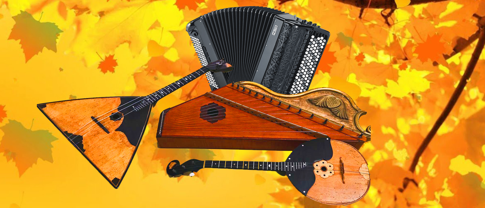

Russian instruments



Russian instruments The history of typically Russian instruments goes way back. The famous ballad singer Boyan sang his songs accompanied by a Psalter. The Psalter is the oldest Russian instrument. It’s like a cross between a harp and a zither and its shape is reminiscent of a bird’s wing. The Gusli, a type that was developed later, more closely resembles a small table. The Gusli is still used a lot today.
Domra
The Domra's body is shaped like a man's belly and has a long neck. It was particularly popular among stage actors and musicians. However, the Church had grave concerns about the instrument and many of the faithful were relieved of them, after which they were burned. [The instruments, not the faithful] The legend goes that a certain instrument builder developed an instrument that wasn’t round but triangular in shape. Supposedly this is how the Balalaika was born, to mislead the Church.
Bayan
The Bayan is another important instrument in Russian music. A button accordion, its name derives from the aforementioned singer Boyan. The current version often makes a great impression because of its broad and refined tones. Originally the instrument was called a harmony. This was a lot smaller and had far fewer buttons. The older type survives to this day but the Bayan is more common
Balalaika
When and how the Balalaika was really invented is unknown. Only through the activities of Vasily Andreev, an especially famous musician, did Russian folk instruments appear in professional orchestras. He built the Balalaika together with instrument builder Kalinov and gave the Domra its modern day shape. Andreev developed a whole family of orchestra instruments and founded the first large folk orchestra. This orchestra became world famous.
Bass balalaika
Double bass balalaika (similar to the double bass from the violin family). This instrument rests on a needle with one of its corners and is played with a leather pick. In the west, the balalaika is mainly seen as a folk instrument. In Russia and Ukraine, people think differently: they see it as a full-fledged instrument that can rival the violin.